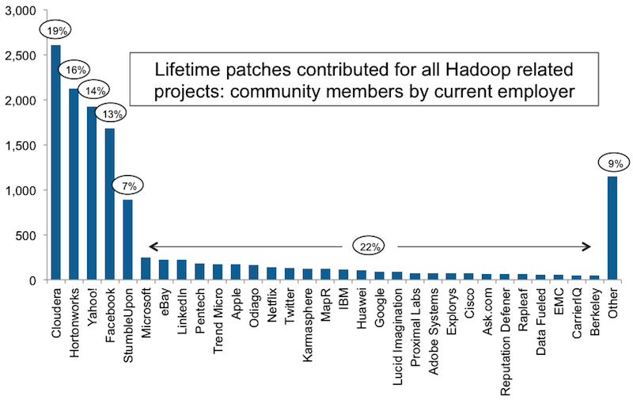
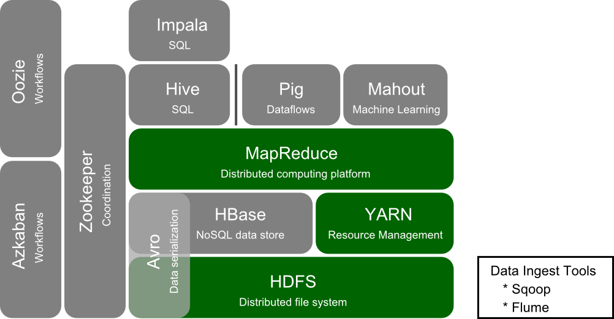
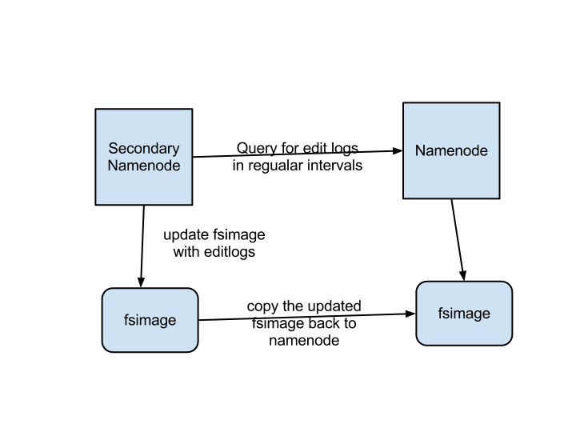
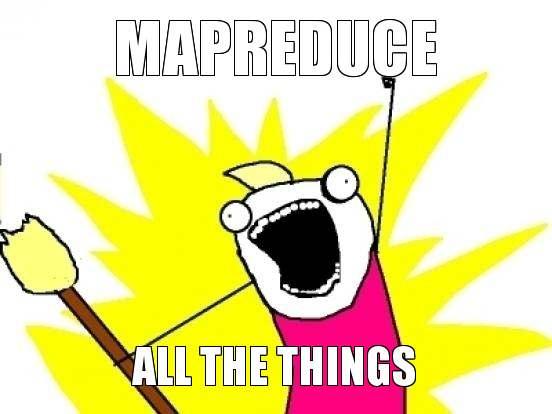
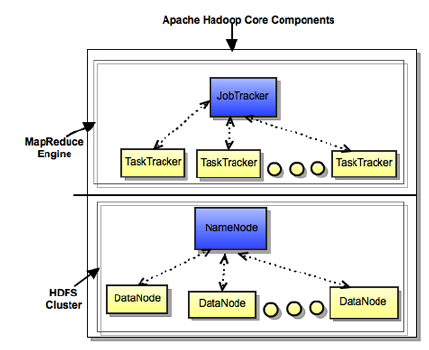
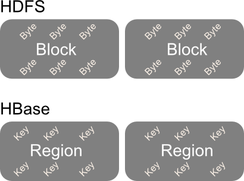
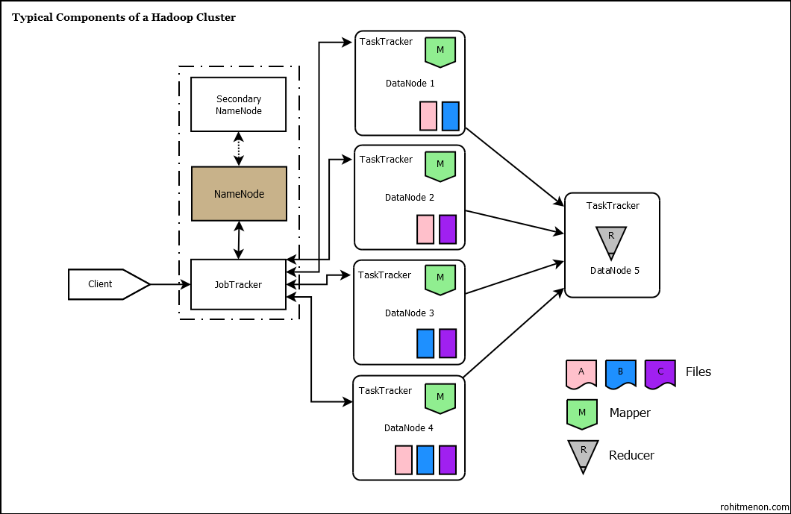
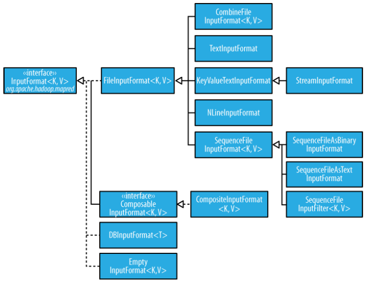
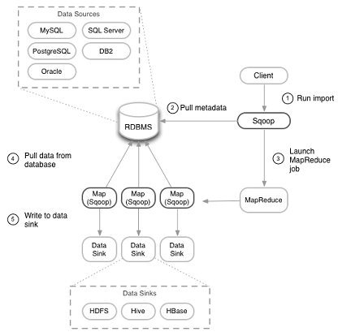

Introduction to Hadoop
Keegan Witt (@keeganwitt)Slides

http://bit.ly/cm14_hadoop
Who's the schlub?
Agenda
Things I'll talk about
- Why Hadoop?
- Hadoop ecosystem
- Deploying Hadoop
- Writing your first job
- Testing your first job
- Why not Hadoop?
- Advanced usages
Things I won't talk about
- Anything I lack prod experience in
- Configuring & managing a Hadoop cluster
- Querying & data mining (e.g. Hive, Pig, Mahout, Flume)
Why ride the elephant?

Source: Hadoop
{kind=link}
The problem
- Growing data
- Disks are slow
- Need higher throughput
- More unstructured data
Desirable features
- Scale out, not up
- Easy to use
- Built-in backups
- Built-in fault tolerance
Use cases
- Text mining/pattern recognition
- Graph processing
- Collaborative filtering
- Clustering
Who else is riding?
- Amazon
- AOL
- Autodesk
- eBay
- Google*
- Groupon
- HP
- IBM
- Intel
- J.P. Morgan
- Last.fm
- NASA
- Navteq
- NSA
- Rackspace
- Samsung
- StumbleUpon
- Visa
- Yahoo
Contributors
Source: Cloudera
{kind=link}
What is Hadoop?
Source: Unknown
{kind=link}
Hadoop ecosystem
HDFS

Source: Timo Elliot
{kind=link}
HDFS architecture

Source: Hadoop
{kind=link}
HDFS architecture
Source: Computer Geek Blog
{kind=link}
HBase
Source: eQuest
{kind=link}
HBase architecture

Source: Lars George's Blog
{kind=link}
HBase HDFS structure
HFiles
/hbase
/<Table>
/<Region>
/<ColumnFamiy>
/<StoreFile>
HLogs (WALs)
/hbase
/.logs
/<RegionServer>
/<HLog>
Logical view

Source: Manoj Khangaonkar's Blog
{kind=link}
MapReduce
Data view

Source: Google
{kind=link}
Server view
Source: Hortonworks
{kind=link}
Physical view

Source: Microsoft
{kind=link}
Distributing load
Process view
Source: Rohit Menon's blog
{kind=link}
YARN & MapReduce 2

Source: Hortonworks
{kind=link}
Parsing
Source: Optimal.io
{kind=link}
Shuffle

Source: Yahoo
{kind=link}
Deploying Hadoop

Source: Dilbert
Deploying Hadoop
For Experimenting
For Real
- Amazon EMR
- Cloudera CDH
- Hortonworks HDP
- MapR
- Microsoft HDInsight on Azure
- From distribution's packages
- From source
Configuring Hadoop
Defaults
- core-site.xml
- hdfs-site.xml
- mapred-site.xml
- hbase-site.xml
- hive-site.xml
- yarn-site.xml
Overriding
Configuration conf = new Configuration();
conf.set("<optionKey>", "<optionValue>");
Writing your first job

Source: CloudTweaks
{kind=link}
Driver
public class WordCount_Driver {
public static void main(String[] args) throws Exception {
Configuration conf = new Configuration();
Job job = new Job(conf, "wordcount");
job.setOutputKeyClass(Text.class);
job.setOutputValueClass(IntWritable.class);
job.setMapperClass(WordCount_Mapper.class);
job.setReducerClass(WordCount_Reducer.class);
job.setInputFormatClass(TextInputFormat.class);
job.setOutputFormatClass(TextOutputFormat.class);
FileInputFormat.addInputPath(job, new Path(args[0]));
FileOutputFormat.setOutputPath(job, new Path(args[1]));
System.exit(job.waitForCompletion(true) ? 0 : 1);
}
}
Mapper
public class WordCount_Mapper
extends Mapper<LongWritable, Text, Text, IntWritable> {
private final static IntWritable one = new IntWritable(1);
private Text word = new Text();
public void map(LongWritable key, Text value, Context context)
throws IOException, InterruptedException {
String line = value.toString();
StringTokenizer tokenizer = new StringTokenizer(line);
while (tokenizer.hasMoreTokens()) {
word.set(tokenizer.nextToken());
context.write(word, one);
}
}
}
Reducer
public class WordCount_Reducer
extends Reducer<Text, IntWritable, Text, IntWritable> {
public void reduce(Text key, Iterable<IntWritable> values,
Context context) throws IOException, InterruptedException {
int sum = 0;
for (IntWritable val : values) {
sum += val.get();
}
context.write(key, new IntWritable(sum));
}
}
Testing your first job

Map test
public class WordCount_Mapper_Test {
private MapDriver<LongWritable, Text, Text, IntWritable> mapDriver;
@Before
public void setUp() {
WordCount_Mapper mapper = new WordCount_Mapper();
mapDriver = new MapDriver<LongWritable, Text, Text, IntWritable>();
mapDriver.setMapper(mapper);
}
@Test
public void testMapper() {
mapDriver.withInput(new LongWritable(1), new Text("cat cat dog"))
.withOutput(new Text("cat"), new IntWritable(1))
.withOutput(new Text("cat"), new IntWritable(1))
.withOutput(new Text("dog"), new IntWritable(1))
.runTest();
}
}
Reduce test
public class WordCount_Reducer_Test {
private ReduceDriver<Text, IntWritable, Text, IntWritable> reduceDriver;
@Before
public void setUp() {
WordCount_Reducer reducer = new WordCount_Reducer();
reduceDriver = new ReduceDriver<Text, IntWritable, Text, IntWritable>();
reduceDriver.setReducer(reducer);
}
@Test
public void testReducer() {
List<IntWritable> catValues = new ArrayList<IntWritable>();
catValues.add(new IntWritable(1));
catValues.add(new IntWritable(1));
List<IntWritable> dogValues = new ArrayList<IntWritable>();
dogValues.add(new IntWritable(1));
reduceDriver.withInput(new Text("cat"), catValues)
.withInput(new Text("dog"), dogValues)
.withOutput(new Text("cat"), new IntWritable(2))
.withOutput(new Text("dog"), new IntWritable(1))
.runTest();
}
}
MapReduce test
public class WordCount_MapReduce_Test {
private MapReduceDriver<LongWritable, Text, Text, IntWritable, Text, IntWritable> mapReduceDriver;
@Before
public void setUp() {
WordCount_Mapper mapper = new WordCount_Mapper();
WordCount_Reducer reducer = new WordCount_Reducer();
mapReduceDriver = new MapReduceDriver<LongWritable, Text, Text, IntWritable, Text, IntWritable>();
mapReduceDriver.setMapper(mapper);
mapReduceDriver.setReducer(reducer);
}
@Test
public void testMapReduce() {
mapReduceDriver.withInput(new LongWritable(1), new Text("cat cat dog"))
.addOutput(new Text("cat"), new IntWritable(2))
.addOutput(new Text("dog"), new IntWritable(1))
.runTest();
}
}
What about TDD?
What about system testing?
- MiniCluster
- HBaseTestingUtility (Sematext example)
Demo
Why NOT ride the elephant?

Source: geek & poke
Why NOT ride the elephant?
- Request/response model
- External clients
- Not much data
- Young
Beyond word count
Dependencies
- HADOOP_CLASSPATH
- Überjar
- -libjars
Classpath ordering
- HADOOP_USER_CLASSPATH_FIRST
- mapreduce.task.classpath.first -> true
Custom counters
public enum KeegansCounters {
FOO,
BAR;
}
// ...
context.getCounter(KeegansCounters.FOO).increment(1);
Job flows
- ChainMapper & ChainReducer
- Sequentially in main()
- Use JobControl in main()
- Multiple Hadoop jar commands
- Oozie
- Azkaban
Sqoop process overview
Source: DevX
{kind=link}
Sqooping data from RDBMSs
sqoop import \
--connect jdbc:mysql://foo.com/db \
--table orders \
--fields-terminated-by '\t' \
--lines-terminated-by '\n'
Sqooping data into RDBMSs
sqoop export \
--connect jdbc:mysql://foo.com/db \
--table bar \
--export-dir /hdfs_path/bar_data
Compressing intermediate data
mapred.compress.map.output -> true
mapred.map.output.compression.codec -> com.hadoop.compression.lzo.SnappyCodec
Compressing output
FileOutputFormat.setCompressOutput(job, true);
FileOutputFormat.setOutputCompressorClass(job, BZip2Codec.class);
Skipping bad records
Profiling jobs
- HPROF
- Trial and error
Distributed cache
Commandline (using Tool interface)
- -files
- -archives
- -libjars
Programmatically
public void addCacheFile(URI uri)
public void addCacheArchive(URI uri)
public void addFileToClassPath(Path file)
public void addArchiveToClassPath(Path archive)
Secondary sorting
Steps
- Change key to composite
- Create Partitioner and grouping Comparator on original key
- Create sort Comparator on composite key
Secondary sorting example
job.setPartitionerClass(FirstPartitioner.class);
job.setSortComparatorClass(KeyComparator.class);
job.setGroupingComparatorClass(GroupComparator.class);